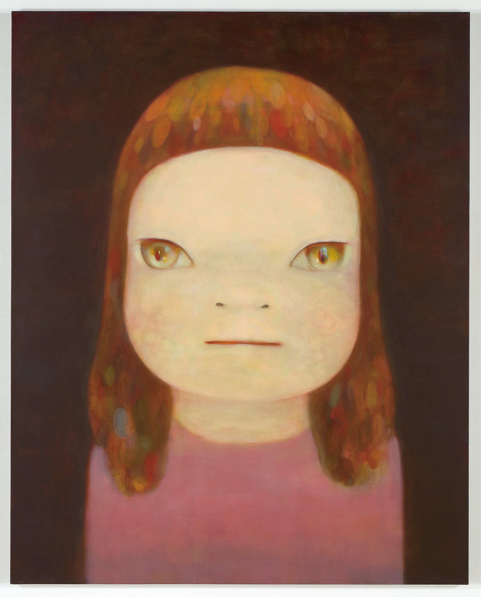

YOSHITOMO NARA

Yoshitomo Nara, Midnight Truth, 2017
BIO
Yoshitomo Nara is a Japanese contemporary artist born in 1959 in Aomori Prefecture. He studied at Aichi University of the Arts and later moved to Germany to continue his education at Kunstakademie Düsseldorf. He lived there for over a decade before returning to Japan in 2000. His work has since been shown internationally. Nara is best known for his paintings, drawings, and sculptures of children and animals. At first, they look simple, but they often carry a lot more emotional weight than you expect.
KEY CHARACTERISTICS OF THE ARTIST'S WORK
Nara's work is recognizable for its large-headed children, clean outlines, and flat colors. The expressions are very direct, which makes the figures feel immediate and personal. At first they seem cute, but they often come across as defiant, sad, or withdrawn; that contrast is what makes the work interesting. It mixes a childlike style with more complex emotions like loneliness and vulnerability. Even though the compositions are simple, they create a strong mood and stay with the viewer.